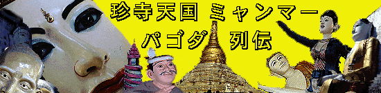
エインドーヤーパゴダ/マンダレー
EinDawYarPagoda/Mandalay
マーケットに程近いこのパゴダ。
まさに遊園地のような楽しさ満載の寺。
「お寺は楽しんでナンボ」という考えをかなり具体的に体現してくれているすんばらしいパゴダ。
美しい仏塔を持つこのパゴダ。しかしその美しさに油断してはならない。
境内の奥には参拝娯楽リーサルウェポンがあちこちに控えているからだ。
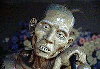 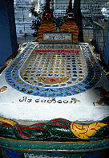 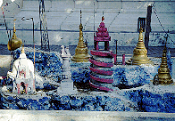
奇妙なオブジェがさながら歪んだ遊園地のように並んでいる。
中でもミャンマーの有名パゴダを集めたジオラマはデッサンが狂っていて相当奇妙だ。
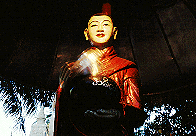 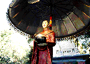 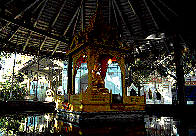
そしてその中に究極のお遊び参拝装置2点が。
電気仕掛けの托鉢マシーンと水上回転パゴダ。
どちらも射幸心を煽りまくります。
さらに奥に行くと驚愕の物件が・・・
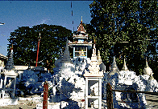 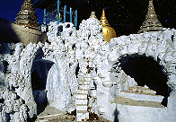
出たあ〜、パラダイスガーデンなり〜！
それはかなりの規模のミャンマー各地の有名パゴダを結集させた巨大ジオラマが。
これはまさにミャンマーの富士塚では。
しかもコレ、見るだけじゃなくてところどころ洞窟状の穴があいていたり、階段があったりして参加可能！素晴らしい。
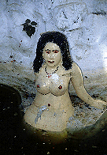
おおおおおっ、ミャンマー初のヌード！
ただでさえヌード規制の厳しいこの国である。
こんなとこにヌード像があるという事自体、いかにこのパゴダが野放図かがよ〜くわかる。
となりにもさらに同じ手法のものが。
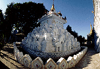
というわけで、耳から脳味噌がとろけ出そうな位楽しいパゴダであった。
このパゴダ、次は是非回転寿司スタイルの拝観システムでも導入して頂きたいものである。
次のスポットへGO！
ミャンマーパゴダ列伝のページへ
珍寺大道場HOME